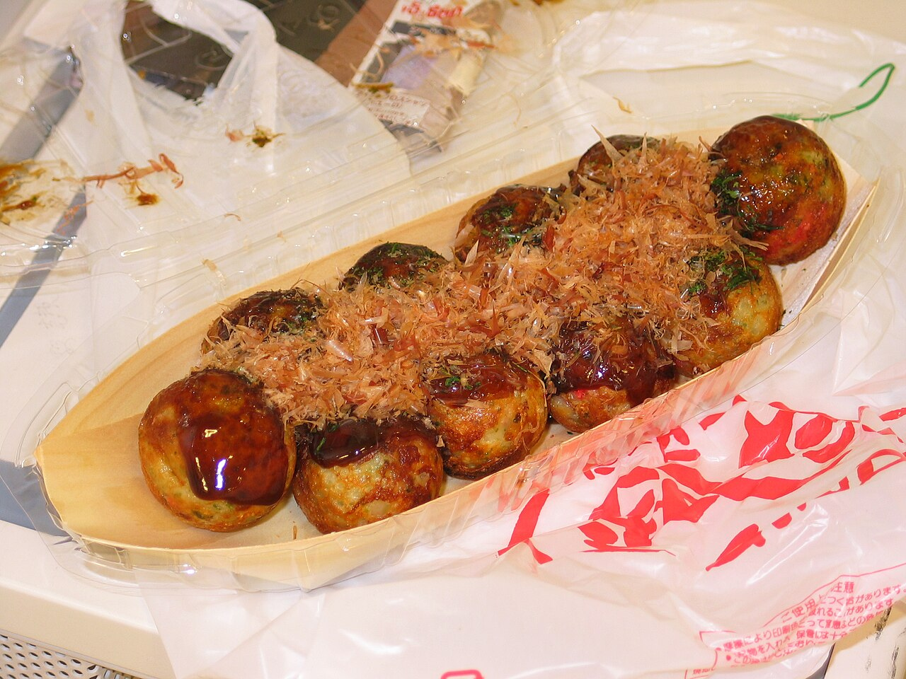

Home
Takoyaki

Description
Takoyaki is a popular Japanese street food that consists of small, round balls of batter filled with octopus pieces. It is typically topped with takoyaki sauce, mayonnaise, bonito flakes, and seaweed.
Ingredients
- 1 cup of takoyaki flour
- 1 1/2 cups of dashi stock
- 2 eggs
- 1/2 cup of chopped
- octopus
- green onions
- pickled ginger
- Takoyaki sauce
- Mayonnaise
- Bonito flakes
- Seaweed
Steps
- Combine takoyaki flour and dashi stock in a bowl to make the batter.
- Add eggs to the batter and mix until smooth.
- Heat a takoyaki pan and grease the molds with oil.
- Pour batter into the molds and add octopus, green onions, and pickled ginger to each mold.
- Cook the takoyaki until the bottom is set.
- Use a pick to flip the takoyaki and cook until all sides are golden brown.
- Remove the takoyaki from the pan and top with takoyaki sauce, mayonnaise, bonito flakes, and seaweed.